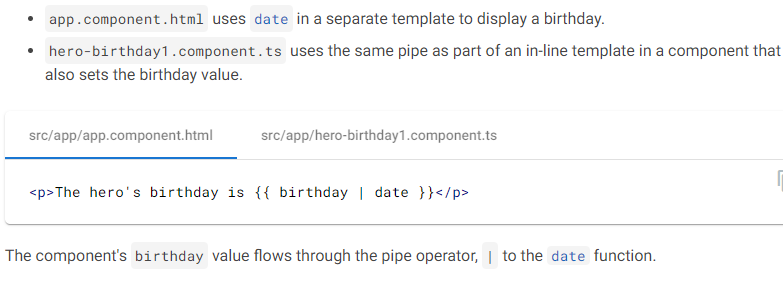

<section>
    <article>
        <h3>Usando Pipes</h3>
        <p>Use PIPE para transformar strings, valores monetários, datas e outros dados para exibição. Pipes são funções simples para usar em expressões de modelo para aceitar um valor de entrada e retornar um valor transformado. Pipes são úteis porque você pode usá-los em todo o seu aplicativo, enquanto declara cada pipe apenas uma vez. Por exemplo, você usaria uma barra vertical para mostrar uma data como 15 de abril de 1988 em vez do formato de string bruto.</p>
        <p>Angular tem pipes embutidos para transformação tipica de dados, incluindo transformação para internacionalização (i18n), que usa informações locais para formar data. A seguir , alguns pipes embutidos que são comumnente usados para transformar dados:</p>
        <ul>
            <li>DatePipe: formata data de acordo com regra local.</li>
            <li>UpperCasePipe: Transforma texto para todas maisculas.</li>
            <li>LowerCasePipe: Transforma texto para todas minusculas.</li>
            <li>CurrencyPipe: trasforma um numero em uma string de acordo com as regras locais </li>
            <li>DecimalPipe: Transforma um numero em uma string com ponto decimal, de acordo com regras locais</li>
            <li>PercentPipe: Transforma um numero em uma string de percentual, formatado de acordo com regras locais.</li>
        </ul>
        <h3>Usando uma pipe em um template</h3>
        <p>Para usar um pipe, use o operaador (|) dentro de uma expressão de template como mostrado no codigo abaixo:</p>
        
        <p>O valor do Componente 'birthday' flui atraves do operador de pipe, | para a função de data.</p>
    </article>
    
</section>
